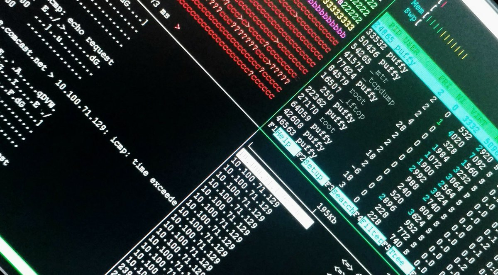
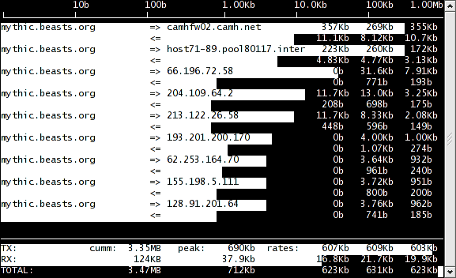
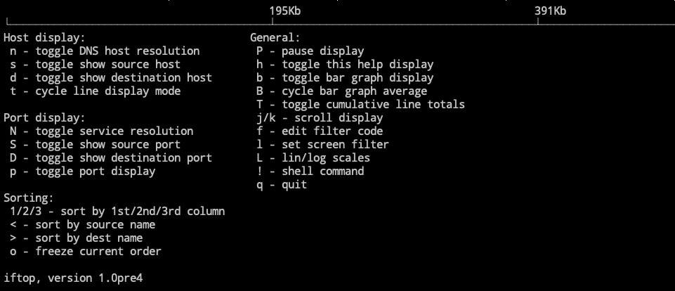

在 Linux 系统下即时监控服务器的网络带宽使用情况，有很多工具，比如 iptraf、nethogs 等等，但是推荐使用小巧但功能很强大的 iftop 工具。
iftop 是 Linux 系统一个免费的网卡实时流量监控工具，类似于 top 命令。iftop 可以监控指定网卡的实时流量、端口连接信息、反向解析 IP 等，还可以精确显示本机网络流量及网络内各主机和本机相互通信的流量集合，非常适合于监控代理服务器或路由器的网络流量。同时，iftop 对检测流量异常的主机非常有效，通过 iftop 的输出可以迅速定位主机流量异常的根源，这对于网络故障排查、网络安全检测是十分有用的。缺点就是无报表功能，且必须以 root 身份才能运行。

1. 工具安装
- 软件管理工具安装
# CentOS
$ sudo yum install iftop
# Ubuntu
$ sudo apt install iftop
- 源代码编译安装
# 安装比较软件包
$ sudo um install libpcap libpcap-devel ncurses ncurses-devel flex byacc
# 下载软件包
$ wget "http://www.ex-parrot.com/~pdw/iftop/download/iftop-0.17.tar.gz"
$ tar zxvf iftop-0.17.tar.gz
$ cd iftop-0.17
$ ./configure
$ make && make install
2. 工具使用
主要介绍工具的主要参数选项
iftop: display bandwidth usage on an interface by host
Synopsis: iftop -h | [-npblNBP] [-i interface] [-f filter code] [-F net/mask] [-G net6/mask6]
-h 显示帮助信息
-n 将输出的主机信息都通过IP显示，不进行DNS反向解析
-N 只显示连接端口号，不显示端口对应的服务名称
-p 以混杂模式运行iftop，此时iftop可以作为网络嗅探器使用
-b 不显示流量的图形条
-B 将输出以bytes为单位显示网卡流量，默认是bits显示
-i interface 指定需要监测的网卡
-f filter code 使用过滤代码来选择计数的数据包(默认是none，但是只计算IP包)
-F net/mask 显示特定网段的网卡进出流量(IPv4)
-G net6/mask6 显示特定网段的网卡进出流量(IPv6)
-l display and count link-local IPv6 traffic (default: off)
-P 显示主机以及端口信息，这个参数非常有用
-m limit 设置iftop输出界面中最上面的流量刻度最大值，流量刻度分五个大段显示
-c config file 指定替代的配置文件
-t use text interface without ncurses
Sorting orders:
-o 2s Sort by first column (2s traffic average)
-o 10s Sort by second column (10s traffic average) [default]
-o 40s Sort by third column (40s traffic average)
-o source Sort by source address
-o destination Sort by destination address
The following options are only available in combination with -t
-s num print one single text output afer num seconds, then quit
-L num number of lines to print
3. 界面操作
主要介绍 iftop 工具的界面信息展示说明和交互式操作
- [1] 界面信息
安装完 iftop 工具后，直接输入 iftop 命令即可显示网卡实时流量信息。在默认情况下，iftop 显示系统第一块网卡的流量信息，如果要显示指定网卡信息，可通过“-i”参数实现。执行“iftop -P -i eth0”命令，得到如下图所示的 iftop 的一个典型输出界面。
- 第一部分
- iftop 输出中最上面的一行，此行信息是流量刻度，用于显示网卡带宽流量。
- 第二部分
- 此部分为分割线中间的部分，其中又分别分为左、中、右三列。左列和中列，记录了哪些 IP 或主机正在和本机的网络进行连接。其中，中列的“=>”代表发送数据，“<=”代表接收数据，通过这个指示箭头可以很清晰地知道两个 IP 之间的通信情况。最右列又分为三小列，这些实时参数分别表示外部 IP 连接到本机 2 秒内、10 秒内和 40 秒内的平均流量值。
- 另外，这个部分还有一个流量图形条，流量图形条是对流量大小的动态展示，以第一部分中的流量刻度为基准。通过这个流量图形条可以很方便地看出哪个 IP 的流量最大，进而迅速定位网络中可能出现的流量问题。
- 第三部分
- 位于 iftop 输出的最下面，可以分为三行，其中，“TX”表示发送数据，“RX”表示接收数据，“TOTAL”表示发送和接收全部流量。与这三行对应的有三列，其中“cum”列表示从运行 iftop 到目前的发送、接收和总数据流量。“peak”列表示发送、接收以及总的流量峰值。“rates”列表示过去 2s、10s、40s 的平均流量值。

- [2] 交互操作
在 iftop 的实时监控界面中，还可以对输出结果进行交互式操作，用于对输出信息进行整理和过滤，在上图所示界面中，按键 “h” 即可进入交互选项界面，如下图所示。iftop 的交互功能和 Linux 下的 top 命令非常类似，交互参数主要分为 4 个部分，分别是一般参数、主机显示参数、端口显示参数和输出排序参数。相关参数的含义如下表所示。

参数 含义
P 通过此键可切换暂停/继续显示
h 通过此键可在交互参数界面/状态输出界面之间来回切换
b 通过此键可切换是否显示平均流量图形条
B 通过此键可切换显示2秒、10秒、40秒内的平均流量
T 通过此键可切换是否显示每个连接的总流量
j/k 按j键或k键可以向上或向下滚动屏幕显示当前的连接信息
l 通过此键可打开iftop输出过滤功能，比如输入要显示的IP，按回车后，屏幕就只显示与这个IP相关的流量信息
L 通过此键可切换显示流量刻度范围，刻度不同，流量图形条会跟着变化
q 通过此键可退出iftop流量监控界面
n 通过此键可使iftop输出结果以IP或主机名的方式显示
s 通过此键可切换是否显示源主机信息
d 通过此键可切换是否显示远端目标主机信息
t 通过此键可切换iftop显示格式，连续按此键可依次显示：以两行显示发送接收流量、以一行显示发送接收流量、只显示发送流量/接收流量
N 通过此键可切换显示端口号/端口号对应服务名称
S 通过此键可切换是否显示本地源主机的端口信息
D 通过此键可切换是否显示远端目标主机的端口信息
p 通过此键可切换是否显示端口信息
1/2/3 根据最近 2 秒、10 秒、40 秒的平均网络流量排序
< 通过此键可根据左边的本地主机名或IP地址进行排序
> 通过此键可根据远端目标主机的主机名或IP地址进行排序
o 通过此键可切换是否固定显示当前的连接
4. 使用示例
工具的简单使用方式以及对应的含义解释
iftop 的强大之处在于它能够实时显示网络的流量状态，监控网卡流量的来源 IP 和目标地址，这对于检测服务器网络故障、流量异常是非常有用的，只需通过一个命令就能把流量异常或网络故障的原因迅速定位，因此对于运维人员来说，iftop 命令是必不可少的一个网络故障排查工具。
# 默认监控第一块网卡上的流量
iftop
# 指定监控eth1网卡上的流量
iftop -i eth1
# 直接显示IP, 不进行DNS反解析
iftop -n
# 直接显示连接埠编号, 不显示服务名称
iftop -N
# 只显示在/dev/wlan0无线网卡接口的SSH数据包
iftop -i wlan0 -f "dst port 22"
# 显示某个网段进出封包流量
iftop -F 192.168.1.0/24
iftop -F 192.168.1.0/255.255.255.0
5. 参考链接
授人玫瑰，手有余香！